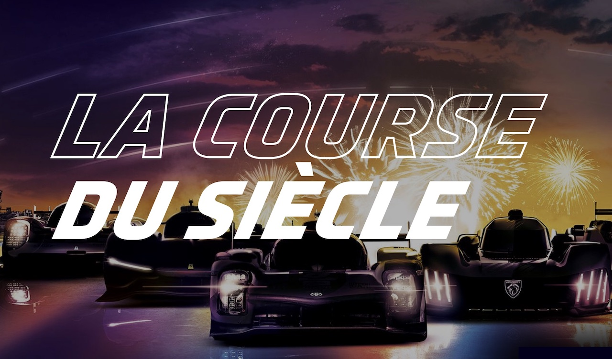

La première édition des 24h du mans à eu lieux en 1923 soit il y a presque 100 ans. Pour l'anniversaire de la course qui a été inaugurée en 1923 l'ACO (l'Automobile Club de l'Ouest) organise une édition particulière pour les 100ans de sa course.

Pour le centenaire du circuit des constructeurs automobile reviennent dans la compétition avec des voitures toujours plus rapides et plus aérodynamique.
Cette "course du siècle" est une édition particulière car récement l'ACO a annoncé que l'édition de 2023 se déroulerait à guichet fermé. Le fait que l'édition se déroule à guichet fermé signifie que plus de 260 000 places ont été vendues (260 000 est le nombre de places officielles que le circuit des 24h est en capacitée d'acceuillir). Cependant l'ACO et la ville du Mans estiment que le nombre de personnes qui se réuniront pour l'évênement est de l'ordre de 350 000 à 400 000 personnes.
Voici la présentation du centenaire des 24h du Mans
Les constructeurs automobile qui seront présent en 2024 sont :
- - BMW
- - Lamborghini
- - Alpine
| Ecurie |
Nombre de victoires |
| Porsche |
19 |
| Audi |
13 |
| Ferrari |
9 |
| Toyota |
5 |
| Peugeot |
3 |
Site officiel de l'ACO